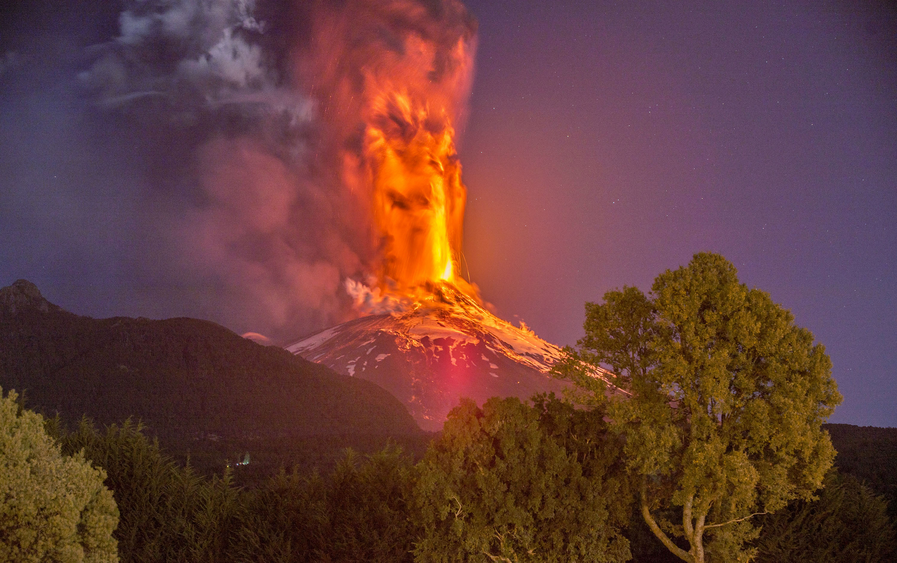

Volcán Villarrica

Uno de los volcanes más activos de Chile. Ha erupcionado 4 veces en los últimos 70 años. Más información en la siguiente tabla.
| Volcán |
Fechas |
VEI |
Evacuados |
Muertos |
| Hudson |
1948 - 1963/4 - 2015 |
3 - 3/2 - 2 |
0 - 52 - 3385 |
100 - 0/22 - 0 |